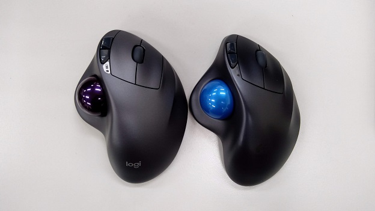

突如乗り換えたトラックボールマウスの使用感のお話
更新：2020/01/10

生まれてきてから約20年、普通のマウスしか使ってこなかった人が
トラックボールマウスを使い始めて一か月位使ってみたお話です。
トラックボールマウスを使い始めて一か月位使ってみたお話です。
さて、本題ですが
普通タイプのマウスから、突如トラックボールマウスに乗り換えた訳ですが、
実際問題、最初の方は親指を動かさずに、手首が動きそうになることもありましたw
ですが、使って3日くらいでそれも無くなり、今では完全に手にフィットしています。
トラックボールの機種にもよりますが、手首をついて手を置いたときに
丁度いい位置、角度にボールがあるので、細かい作業もやりやすいですし、
なにより手首を動かさないので、手首の負担も減り長時間作業できます。
普通タイプのマウスから、突如トラックボールマウスに乗り換えた訳ですが、
実際問題、最初の方は親指を動かさずに、手首が動きそうになることもありましたw
ですが、使って3日くらいでそれも無くなり、今では完全に手にフィットしています。
トラックボールの機種にもよりますが、手首をついて手を置いたときに
丁度いい位置、角度にボールがあるので、細かい作業もやりやすいですし、
なにより手首を動かさないので、手首の負担も減り長時間作業できます。
トラックボールマウスのメリットデメリット
メリット
•手首が疲れない。
•細かい作業がしやすい。
•作業場所をとらない。
•平らな面に置かなくても良いで、最悪寝ながらマウス操作ができる。
•手にフィットするデザイン
•カスタマイズできるので楽しい(ボール自体を)
デメリット
•人によっては慣れるまで時間がかかる。
•値段が比較的高め(ちゃんとしたものだと最低3000円ほど)
•親指操作タイプだと左右兼用が無い。
メリットデメリットはこんな感じですかね。
ぜひ、セール等でトラックボールマウスが安くなっている時に買ってみてはいかがでしょうか。
トラックボールマウスの沼にハマりましょうやぁ
•手首が疲れない。
•細かい作業がしやすい。
•作業場所をとらない。
•平らな面に置かなくても良いで、最悪寝ながらマウス操作ができる。
•手にフィットするデザイン
•カスタマイズできるので楽しい(ボール自体を)
デメリット
•人によっては慣れるまで時間がかかる。
•値段が比較的高め(ちゃんとしたものだと最低3000円ほど)
•親指操作タイプだと左右兼用が無い。
メリットデメリットはこんな感じですかね。
ぜひ、セール等でトラックボールマウスが安くなっている時に買ってみてはいかがでしょうか。
トラックボールマウスの沼にハマりましょうやぁ
Tweet